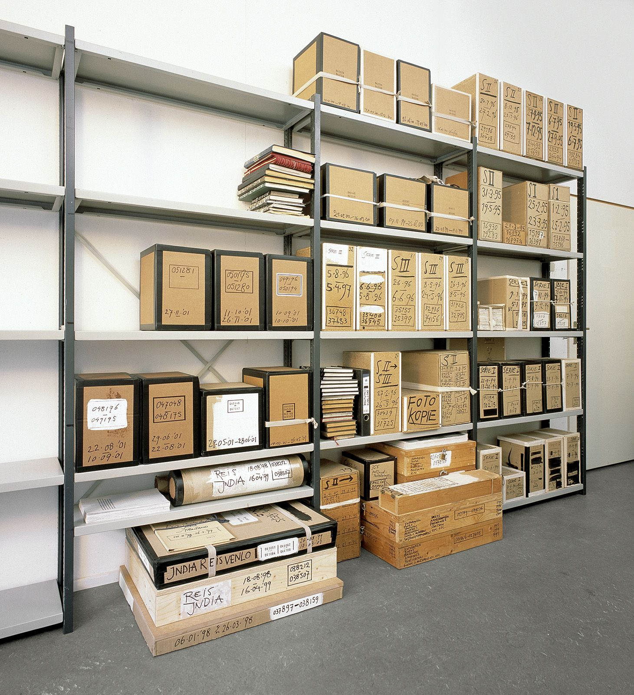

School records
Series 2 of 6 · MRO/SCH
1872–1998 · 38.5 m · Strongroom B
ReferenceMRO/SCH
Dates1872–1998
Length on the shelf38.5 m
StoreStrongroom B
Items listed12, 2 closed
Order now, in the reading room11:45
Log books, admission registers and managers’ minutes for eleven board and council schools in the branch area, from the 1870 Act to the 1998 reorganisation.
| Reference | Title | Dates | Extent | Access | Slip |
|---|---|---|---|---|---|
| MRO/SCH/003 | Kiln Street Board School log book | 1872–1903 | 1 vol | Open | |
| MRO/SCH/004 | Kiln Street Board School log book | 1903–1941 | 1 vol | Open | |
| MRO/SCH/009 | Kiln Street admission register | 1872–1925 | 1 vol | Open | |
| MRO/SCH/015 | Fellgate Infants log book | 1880–1966 | 2 vols | Open | |
| MRO/SCH/016 | Fellgate Infants admission register | 1946–1981 | 1 vol | Open | |
| MRO/SCH/024 | Ousewick Council School managers’ minutes | 1903–1958 | 1 vol | Open | |
| MRO/SCH/027 | Ousewick Council School log book | 1958–1998 | 1 vol | Closed until 2028 | |
| MRO/SCH/033 | Marrowby Secondary Modern admission register | 1949–1973 | 2 vols | Open | |
| MRO/SCH/034 | Marrowby Secondary Modern admission register | 1973–1998 | 2 vols | Closed until 2028 | |
| MRO/SCH/040 | School attendance officer’s reports | 1891–1939 | 1 box | Open | |
| MRO/SCH/046 | Evening classes enrolment books | 1921–1969 | 3 vols | Open | |
| MRO/SCH/051 | Photographs and sports day programmes | 1911–1990 | 1 box | Open |
Admission registers name children and are closed for 30 years from the last entry. Log books are open unless the entry names a pupil’s health; those pages are covered before production.
Closed itemsMRO/SCH/027, until 2028
MRO/SCH/034, until 2028
MRO/SCH/034, until 2028
Fragile, no copiesNone
